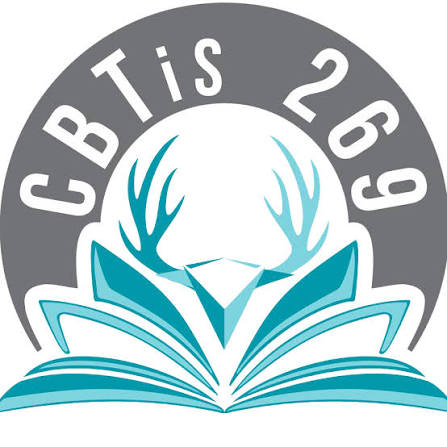

2. ¿Qué es el reciclaje? 3. Tipos de residuos 4. Las 3R 5. Problema ambiental 6. En nuestra escuela 7. En nuestra comunidad Ir al Formulario 8. Mini-Juego Ecológico

El cuidado del medio ambiente es una responsabilidad que comienza con nuestras acciones diarias. A través del proyecto Eco-Venados Transformando el Entorno, buscamos crear conciencia en nuestra comunidad escolar y en Ciudad Juárez sobre la importancia de separar los desechos, reducir la contaminación y darle una segunda vida a los materiales que consumimos todos los días.
Fomentar la cultura del reciclaje y el manejo responsable de los residuos sólidos entre los estudiantes y habitantes de nuestra localidad, brindando información clara sobre cómo clasificar la basura y aplicar la regla de las 3R para construir un entorno más limpio y saludable.
"No podemos cambiar el mundo de la noche a la mañana, pero cada botella separada y cada residuo reciclado es un paso firme hacia el futuro que merecemos."
Completa los siguientes datos para registrar tu compromiso ambiental:
Compártenos tus propuestas, sugerencias o acciones ecológicas escribiendo directamente a nuestro equipo: